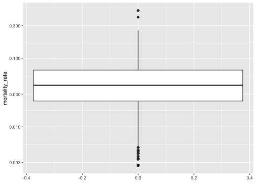
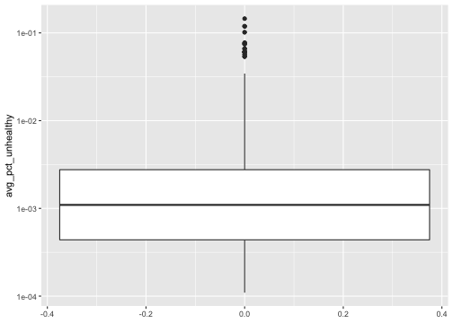
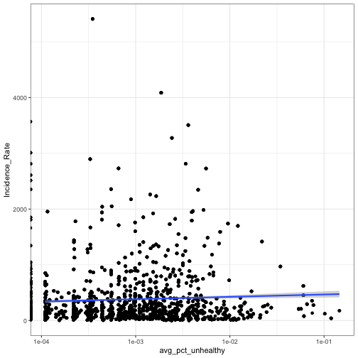
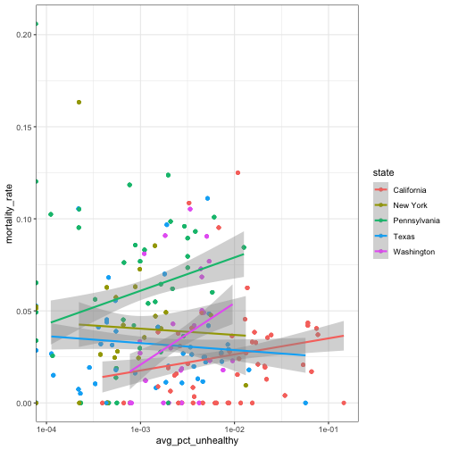
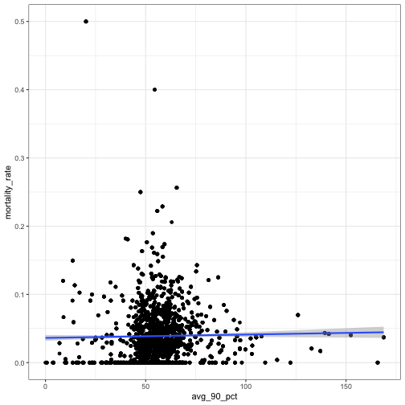

Courtney Stoner, Katherine Lee, Steven Tomey, Lesley Chapman
STAT612 Group Project
Distribution of mortality rate and the average percent of unhealthy days counted



Nationwide avg pct unhealthy days over 5 years and incidence rate, mortality rate

When plotting average of the median aqi against mortality rate. More states seem to have a positive correlation

There could be enough evidence to say that the 5-year average of the median air quality is associated with higher mortality rates
This association could be true when considering every 1 additional increase to the avg of the 5yr med AQI is associated with a 0.000178 increase in the mortality rate
The statistical tests as well as caveates within the data could also have influenced the results